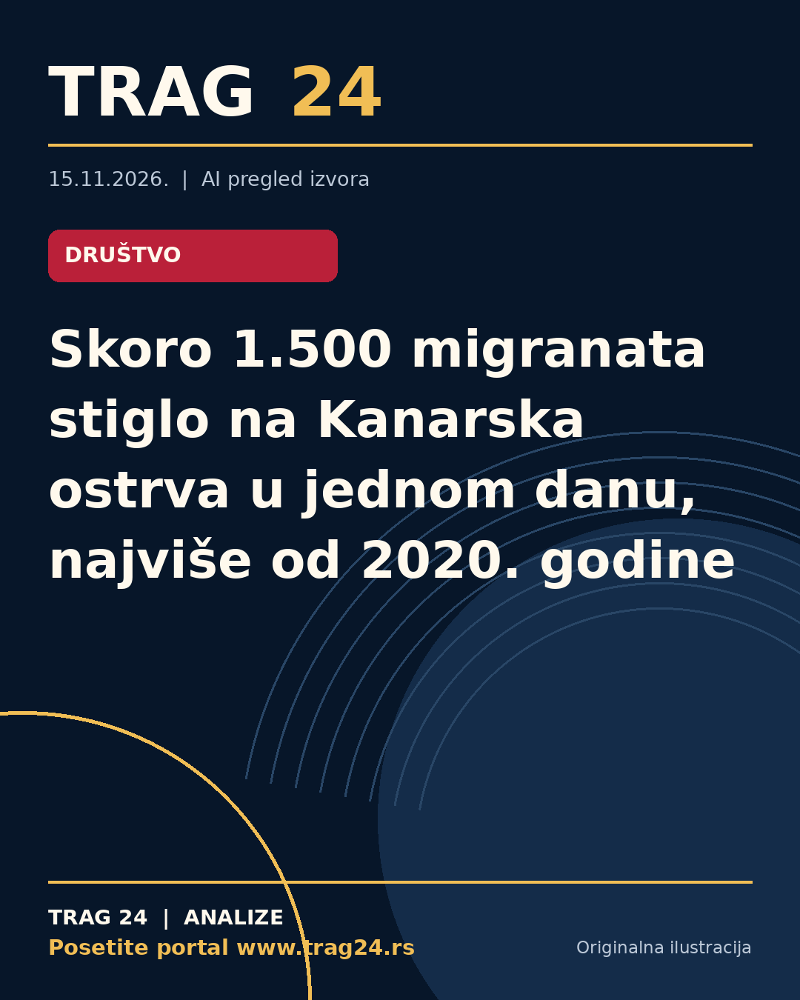

Skoro 1.500 migranata stiglo na Kanarska ostrva u jednom danu, najviše od 2020. godine

ŠTA SE DOGODILO
U subotu je na španska Kanarska ostrva stiglo ukupno 1.488 migranata, što predstavlja najveći broj u jednom danu još od 2020. godine. Ovi ljudi prevezeni su u 14 plovila, a jedan čamac prevozio je 240 ljudi, uključujući žene i decu.
HRONOLOGIJA
Talas dolazaka migranata na Kanarska ostrva iz zapadne Afrike traje od oktobra ove godine. Prethodni jednodnevni rekord zabeležen je 7. novembra 2020. godine, kada je spaseno 1.461 osoba. Uprkos ovom rekordu, broj migranata koji su stigli na ostrva od januara do 31. oktobra ove godine manji je za oko 5,5% u odnosu na isti period prošle godine.
ŠTA NAVODE IZVORI
Agencije EFE i Rojters prenose da je španska obalska straža spasila migrante. Vlasti ističu da atlantska ruta od Zapadne Afrike do Kanarskih ostrva predstavlja jednu od najsmrtonosnijih migracionih ruta zbog pretrpanih čamaca. Španski ministar za teritorijalnu politiku najavio je posetu ostrvu El Ijero radi razgovora o porastu dolazaka migranata. Takođe, navodi se da je porast broja dolazaka izazvao dodatni pritisak na lokalne prihvatne i hitne službe, posebno na manjim i ređe naseljenim ostrvima.
ŠTA JE POTVRĐENO
Potvrđeno je da je u jednom danu spaseno 1.488 migranata u 14 plovila. Potvrđen je i podatak o prethodnom rekordu od 1.461 spasene osobe u novembru 2020. godine. Takođe, potvrđeno je da jedan brod sa 240 ljudi, uključujući 12 žena i 36 dece, doplovio do Kanarskih ostrva. Podaci vlade ukazuju na manji ukupni broj migranata u odnosu na prošlu godinu, uprkos naglom rastu prispeća u poslednjem periodu.
ŠTA NIJE POTVRĐENO
Nisu dostupni podaci o identitetima migranata, razlogu njihove migracije ili daljim planovima nakon dolaska na Kanarska ostrva. Takođe, informacije nisu dostupne o specifičnim merama koje će vlasti preduzeti kao odgovor na trenutnu situaciju.
ŠTA OSTАJE OTVORENO: Otvoreno je pitanje kako će se španske vlasti i lokalne zajednice dugoročno nositi sa povećanim prilivom migranata. Takođe, ostaje da se vidi da li će talas dolazaka nastaviti da raste u narednim mesecima, kao i koje konkretne korake će preduzeti španski ministar i nadležne službe tokom i nakon najavljene posete ostrvu El Ijero.
Izvori
- https://www.danas.rs/svet/skoro-1-500-migranata-u-jednom-danu-stiglo-na-kanarska-ostrva/
- https://insajder.net/vesti/skoro-1500-migranata-stiglo-na-kanarska-ostrva-u-jednom-danu
- https://n1info.rs/svet/skoro-1500-migranata-u-jednom-danu-stiglo-na-kanarska-ostrva/
Ova analiza je pripremljena uz pomoć veštačke inteligencije na osnovu javno dostupnih izvora. Navodi izvora nisu nužno nezavisno potvrđeni.